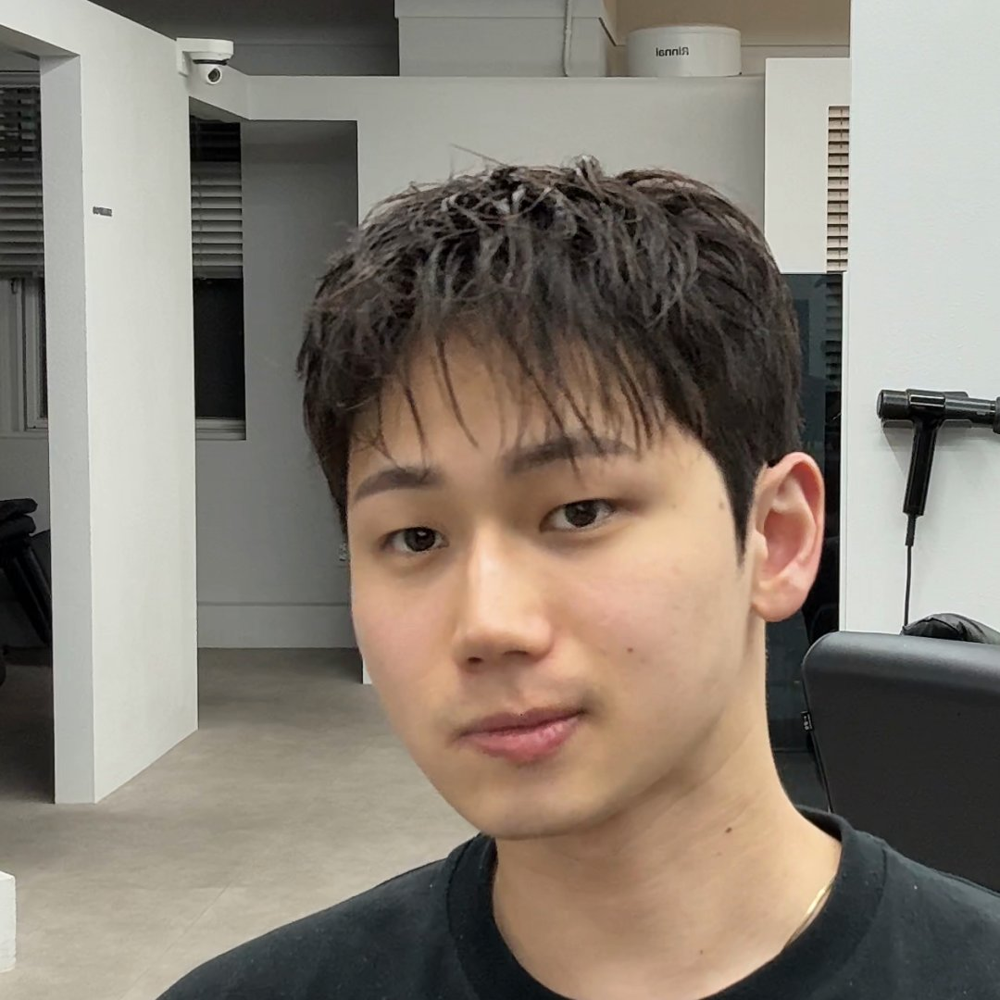

이 포스팅은 쿠팡 파트너스 활동의 일환으로, 이에 따른 일정액의 수수료를 제공받습니다.
← 진성쌤의 추천 제품!
헤어 토닉,
언제 발라야 할지 헷갈린다면?
실제 시술·스타일링 일부 · 소리 없이 재생
내 머리에 맞는 사용법부터 보기 ↓사진으로 자세히 보기

텍스처컷 + 다운펌 · 스타일링에 그루밍 토닉을 사용했습니다.
핫핸즈
그루밍 헤어 토닉
드라이 전에 사용하는 그루밍 토닉입니다. 젖은 머리에 바르고 말리는 순서만 기억하면 됩니다.
HOW TO
사용 순서
- 머리가 젖어 있을 때 토닉을 바릅니다.
- 바른 뒤 바로 드라이로 말립니다.
같은 제품도 모질·길이·펌 상태에 따라 다르게 표현돼요. 내 머리에 맞는지는 상담 때 함께 확인해요.
토르소 맨즈헤어 홍대상수역점